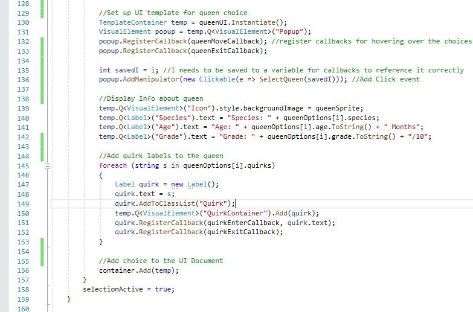

Tycoon Project
Background
As stated in the tower defense project page, this project started with the intention of improving my knowledge of UI systems and implementation. When deciding on a theme for this project I wanted to do something that I was already familiar with. During highschool I tried out beekeeping as a hobby and I had taken courses on the subject. Due to this prior background knowledge on the subject I thought it would be a fun topic to explore. The first genre that came to mind when I tried imagining a game based on beekeeping was a tycoon-like game where you would manage colonies of bees, plant flowers, harvest honey, and sell it to acquire more bees and better equipment.
I've gotten decently far into development and while the backend systems and algorithms are set-up, not all of the front-end assets are finished. However, the core gameplay I had imagined involves designing the layout for your plot of land, setting up beehives, deiciding what types of flowers to plant, managing beehive development, harvesting and selling the honey, and purchasing upgrades/researching new techniques. I intend to introduce strategic elements through honey bee species. Different species will have different stats and tendencies. Different flowers will be more or less expensive, which will effect their respective honey's sell price. One of the mechanics to add challenge to the game is hive health. Weather, diseases, and pests can all affect a hives health, and if not properlly managed the hive can die.
Challenges & Accomplishments
So far in development, I have come across multiple challenges, most of which involve my hexagonal UI elements. Since the purpose of this project was to learn the ins and outs of UI implementation I wanted to get creative with my UI design and layout. To fit the theme of beekeeping I wanted to make the main purchasing menu hexagonal. The first challenge was that visual elements (Unity's basic UI building block) are square. If you make the background image of a visual element a hexagon, then click outside of the hexagon but inside the visual element, the visual element will still read the click. I needed a way to detect if the users click is within this transparent area outside the hexagon. To do this, I had to make a custom visual element class to override the click detecting method. My custom method checks to see if the pixel under the cursor is transparent, and if it is to disregard the click.
The second challenge with this menu was creating new hexagon menu items during runtime, and aligning them with the menu tabs. The positioning aspect of the hexagons mostly came down to playing around with different float values and such. However, in the tower defense project, one of the last problems I had was with instatiating UI elements during runtime. The main issue came with screen-size scaling and how improper scaling would cause these runtime UI elements size and position to be inconsistent with those that were pre-placed. I ended up doing more research and forum scouring with a focus on UI scaling. After not finding my answer for days, I reconsidered my knowledge of basic scaling html scaling. As it turns out, this is where my problem was. I had a fundamental misunderstanding of how different units worked with different scaling modes in unity. I've always used percentages for making html elements take up the same amount of screen space on different screen sizes, but when using the 'Scale with Screen-size' scale mode in unity, this doesn't have the same effect. Since this scale mode applies a scaling ratio to all the elements to keep size consistant, this means that when you use percentages to define the size of elements, you end up applying a ratio to a percentage, which breaks this scaling. Instead I needed to use pixels to define the dimensions of my elements. Looking back, it was probably bad habit to rely on percecntages so much and this should be an improvement to all my work moving forward. Ever since I've switched to using pixels, I haven't been having any problems with proper element scaling and this long-term problem of mine seems to be solved.
A third challenge I encountered was with hexagonal progress bars. When designing the UI for the bee hives, I wanted to stick to the hexagonal theme. In each hive there are number of settings, buttons, and information displayed. One piece of information the player needs to know is how much comb/honey/nectar is in the hive. I thought that a creative way to display this would be with progress bars that are shaped to be hexagons. This challenge required more research that I had hoped, and it took a lot of forum post delving to find a solution that worked for me. What I found was that Unity has an expiramental SVG package that can be added to the project, and using an SVG Mask, I conform the rectangular progress bar to a hexagon by enlarging it an masking the outer edges. This worked perfectly and I am very happy with the result:
Lastly, I want to bring up another weakness that this project has helped me overcome. Since this project is a solo project, I am also in charge of the 2D art. I have always considered myself terrible at drawing both physically and digitally. This has forced me to innovate since I only have a few assets from other projects that I can re-use. In college I had to take a class in 3D modeling and I ended up being pretty decent at it. To make 2D art that fit the artstyle and feel of the game, I modeled all the UI Icons in belnder as 3D objects, then took a 2D orthographic projection of it. I'm very pleased with how this method has been working for me and I plan to use this technique for the forseeable future.
Code Sample
The future
As of now, the big problems and gaps in my knowledge that were present before I started this project are gone. I have accomplished my goals of working with custom visual elements, fixing scaling issues, and creating interestive and unique UI layouts. Logically, now is the point where I would go back to my tower defense project and finish that. However, I have grown attached to the concept of this game and I want to see my new UI complete and working in tandum with gameplay. My new goal is to continue working on this project and have a minimum viable product ready before I graduate in May.